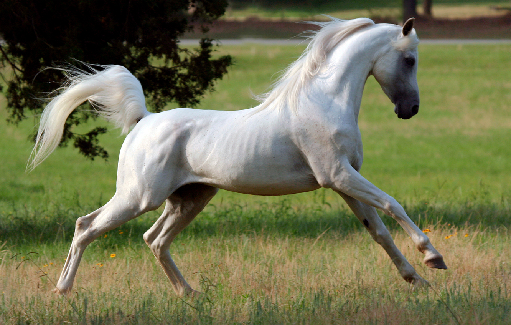
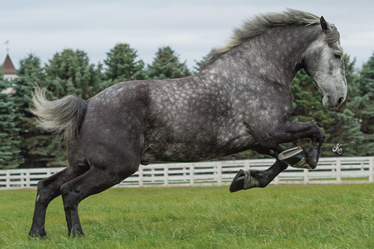
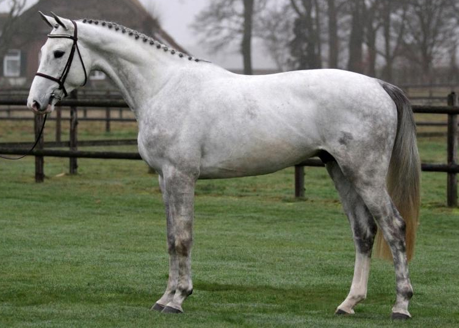

While horses come in thousands of breeds of every shape and size, breeds are generally divided into three categories: hotbloods, warmbloods, and coldbloods. These different breed types typically serve various different purposes, so owners will choose the right breed for their needs before selecting a horse to buy or lease.
Hotbloods are generally smaller, slimmer, and more agile than the other breeds. They get their name from a tendency to be nervous, tempermental, and very fast. Some common breeds within this category are Thoroughbreds and Arabians. While these two breeds are the only officially recognized hotblood breeds, there are a few more less common breeds that fall within this category among horse owners. Hotbloods are excellent runners, tend to have a lot of energy, and have lighter bodies which allow them to be more agile than most. These traits make these breeds great for racing, endurance riding, jumping, barrel racing, and other speed-based competitions. The rider must be keenly aware of their surroundings as these horses can be quick to spook and bolt.
Coldbloods are on the opposite side of the spectrum from the hotblood breed. These horses are enormous, and are often called coldbloods due to their calm, quiet temperment. Coldbloods are also often known as "draft horses." These horses are tall, heavy, and incredibly muscular. Some common coldblood horses you may have heard of would be Percherons, Friesians, and even the famous Budweiser Clydesdales! These horses are often chosen for hard labor, pulling carts and wagons, farming, and general hauling work. Draft horses are fantastic around children, as they are calm and extremely difficult to spook, and make excellent schooling horses and general pleasure riding horses. These big guys may be intimidating at first, but they are truly gentle giants.
Warmblood horses are the result of breeding the cold- and the smaller hot-blooded horses together, creating a new category of breeds that are elegant and strong, while retaining a great temperment. These horses are the most common choice for English riders because they tend to be the best fit for English-type competitions. Warmbloods get their tall size and muscle strength from the draft horse, while inheriting the lean, athletic body from their hotblood ancestors. These horses have a lot of endurance and strength, while still appearing delicate enough for dressage and halter competition. Their temperment is not as solid as the coldblood, but they are much more dependable and calm than the Thoroughbred or Arabian. Some of the more common warmbloods examples would be the Hanoverian, Dutch Warmblood, and Andalusian breeds.
If you are looking to purchase or lease a horse for yourself, you should do a lot of research before ever going to see a horse you may want to buy. What will you use your horse for? What kind of temperment are you prepared to deal with? How much experience do you have, and will there be any children learning to ride and handle your horse? These are all questions that need to be considered before searching for your very own horse.